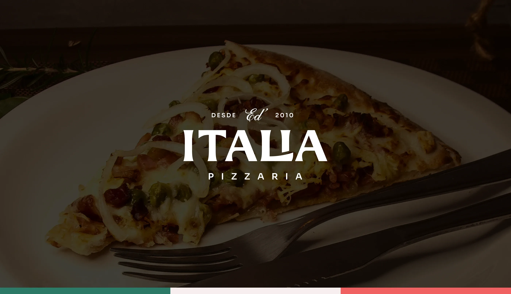
Ed' Italia Pizzaria
A little piece of Italy in the countryside of São Paulo.
To celebrate ten years since opening, the new visual identity of Ed’ Italia Pizzeria is born in Itaporanga, in the countryside of São Paulo. It leans on tradition and refinement with touches of modernity: just the name “Ed’ Italia Pizzeria” and a nod to 2010, the year it opened, to evoke a traditional setting with a hint of Europe in its curves.
We chose a logo with no drawings, no pizzas or Italian crests, to focus on the name: easy to read and remember. The lettering carries a nod to 2010, the year the house opened, and a hint of Europe in its curves.
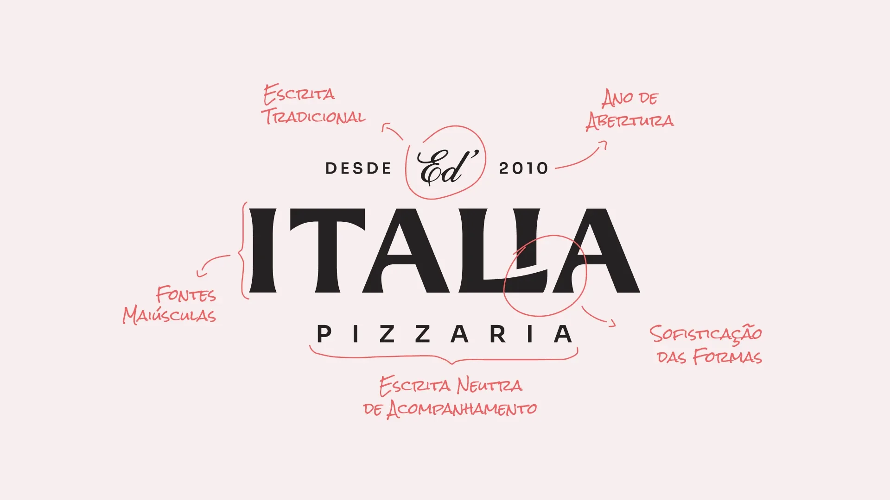
To align the logo elements better, we removed the accent from “Itália” so it would not clash visually with the “Ed’”. In Italian, the word takes no accent.
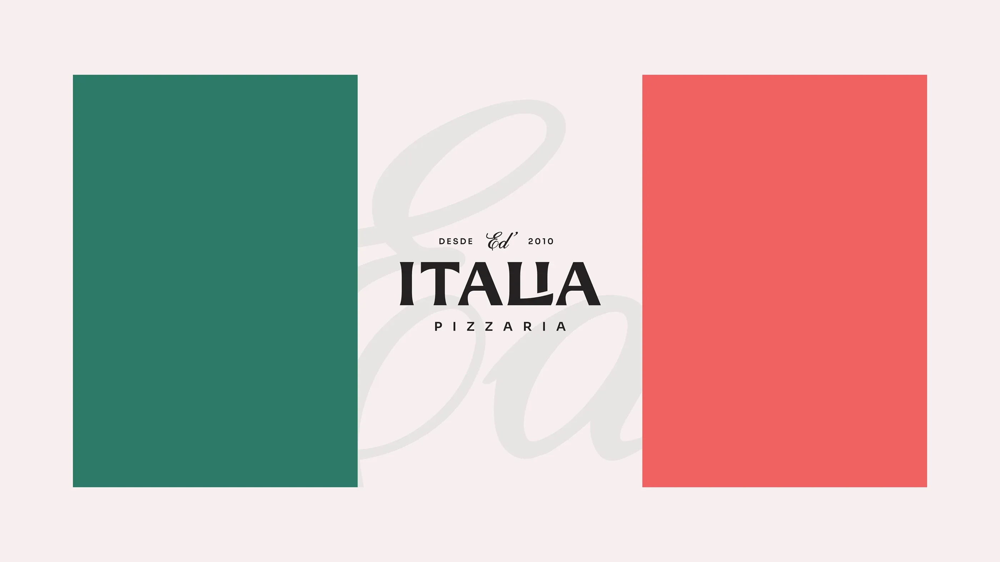
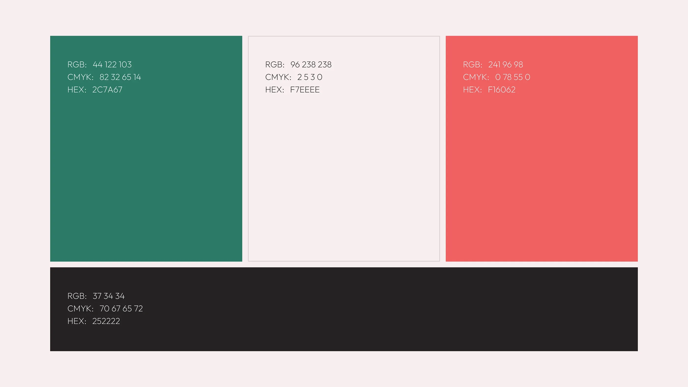
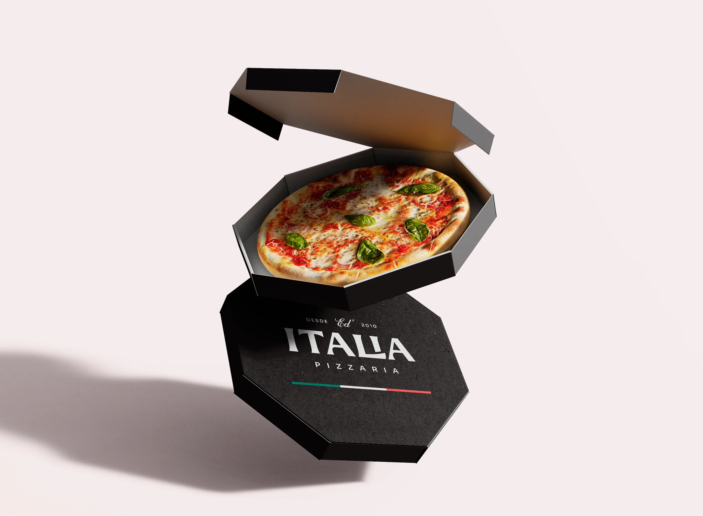
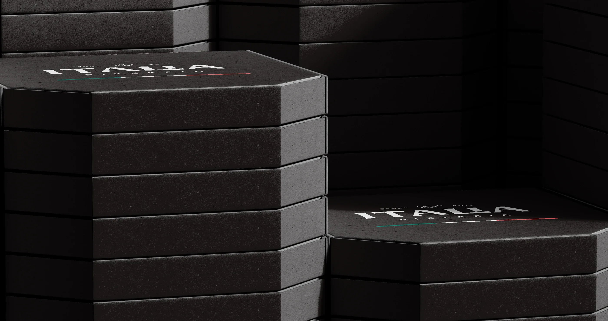
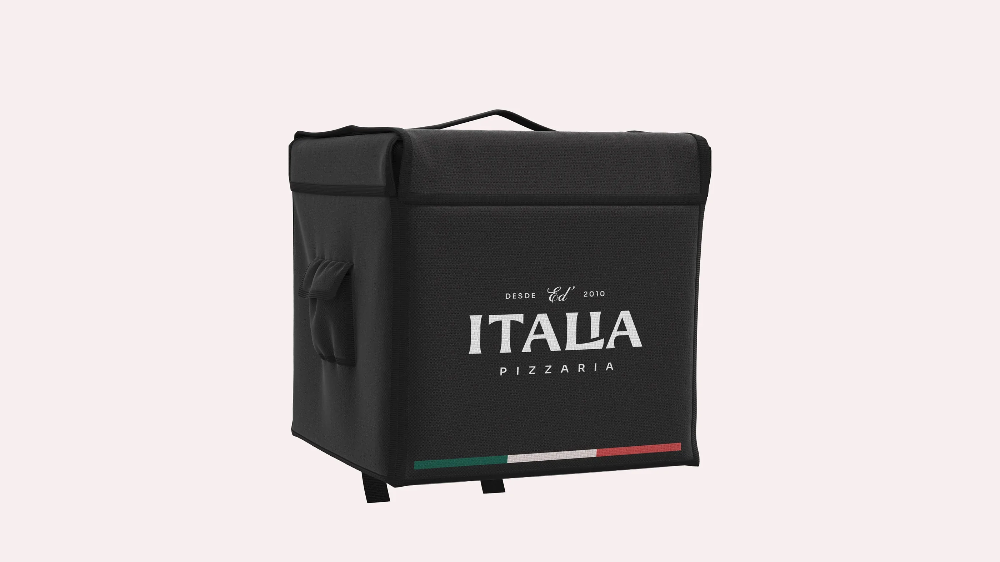
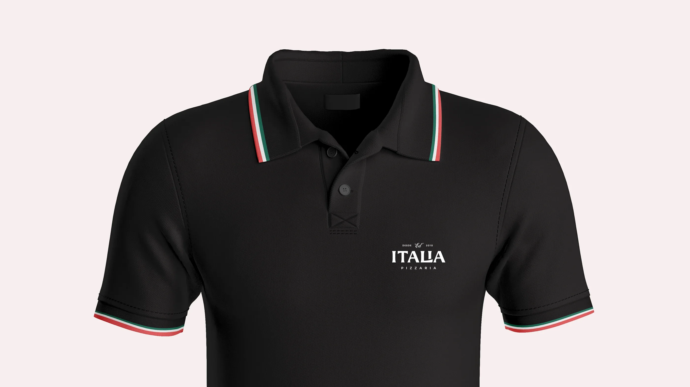
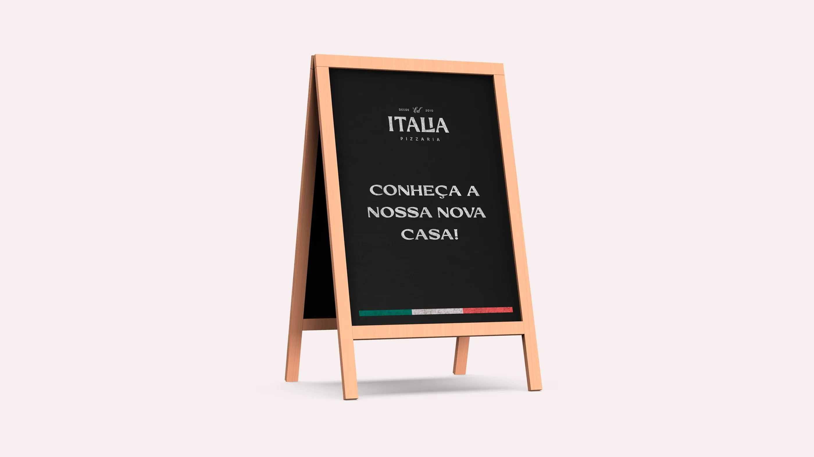
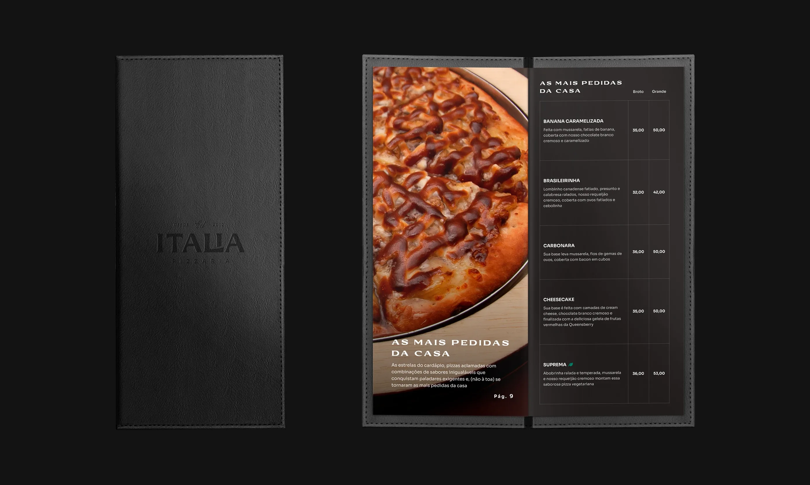
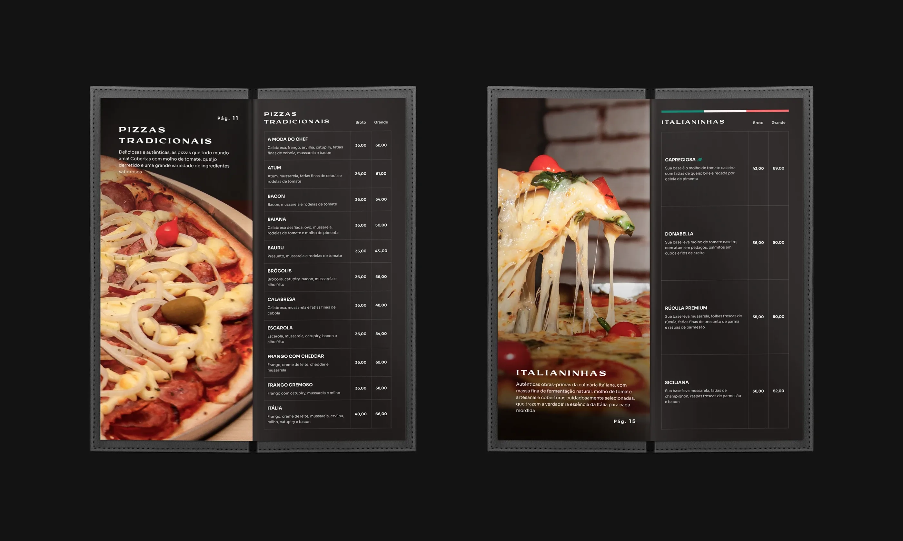
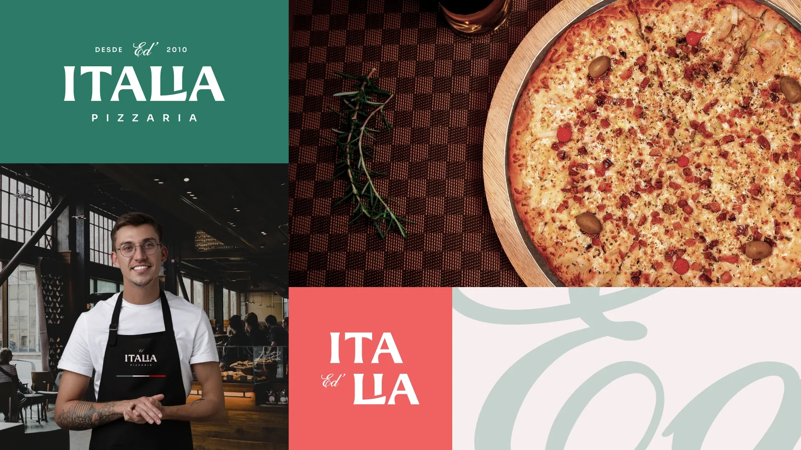
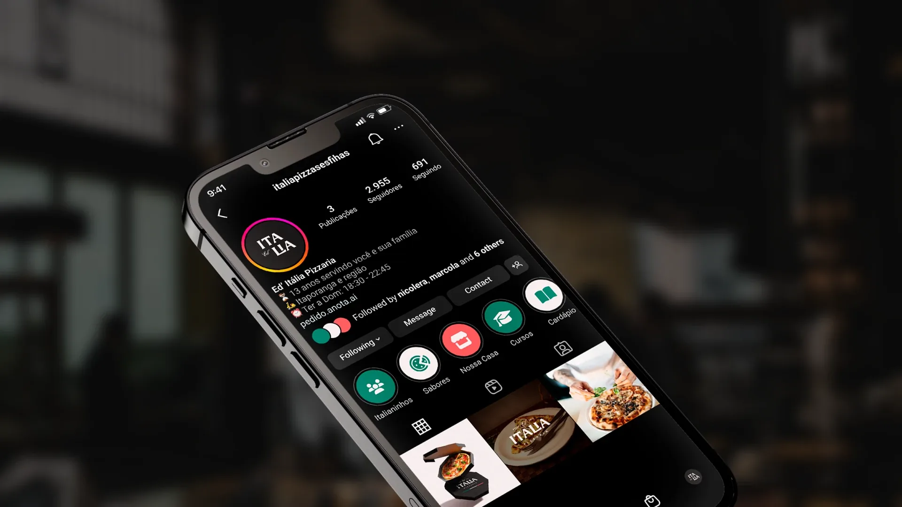
- Design
- Marcos Castilho e Nícolas Azevedo
- Video
- Lucas Santi
- Project
- Blend Studio